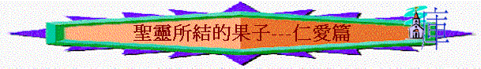

一.仁愛的重要
～在和合本中，「仁愛」有時譯作「愛」、「愛心」、「親愛」的
～而加5:22將「仁愛」放在聖靈所結的果子中的第一種特質，因為「仁愛」在聖經中佔有重要的位置
1.律法的精意
「因為全律法都包在「愛人如己」這一句話之內了。」加5:14
「原來在基督耶穌裡，受割禮不受割禮全無功效，惟獨使人生發仁愛的信心才有功效。」加5:6
「不可報仇，也不可埋怨你本國的子民，卻要愛人如己。我是耶和華。」利19:18
～猶太人重視律法，而律法的精意與總綱就是愛，一個人沒有愛，他也沒有達成行律法背後的含意了！
2.全德的聯絡
「在這一切之外，要存著愛心，愛心就是聯絡全德的。」西3:14
～所有德行(也包括聖靈所結果子的其餘8種特質)也是由愛聯繫的，與愛有關係，令全德發揮得更好
A.愛與信心
「原來在基督耶穌裡，受割禮不受割禮全無功效，惟獨使人生發仁愛的信心才有功效。」加5:6
「我的弟兄們，若有人說自己有信心，卻沒有行為，有什麼益處呢？這信心能救他嗎？若是弟兄或是姐妹，赤身露體，又缺了日用的飲食；你們中間有人對他們說：「平平安安的去吧！願你們穿得暖，吃得飽」；卻不給他們身體所需用的，這有什麼益處呢？這樣，信心若沒有行為就是死的。必有人說：「你有信心，我有行為；你將你沒有行為的信心指給我看，我便藉著我的行為，將我的信心指給你看。」你信神只有一位，你信的不錯；鬼魔也信，卻是戰驚。」雅2:14-19
～5:6又譯「唯有那藉著愛表達出來的信，才有用處」，一個人他單說自己是信神，是沒有功效的，他要藉愛心表達他所信的信仰，這信心才是真的，對別人及己有功效
B.愛與喜樂
「愛裡沒有懼怕；愛既完全，就把懼怕除去。因為懼怕裡含著刑罰，懼怕的人在愛裡未得完全。」約壹4:18
～有愛的人，他可以坦然無懼的喜樂迎見主，因他有愛，愛使他完全，完全的人等候主也不會怕受審判
C.愛與和平
「凡事謙虛、溫柔、忍耐，用愛心互相寬容，」弗4:2
～信徒用愛就能寬容人，不啟爭端
D.愛的忍耐、恩慈
「愛是恆久忍耐，又有恩慈；愛是不嫉妒；愛是不自誇，不張狂，」林前13:4
～有愛的人，自然也有忍耐與恩慈
E.愛與良善
「愛是不加害與人的，所以愛就完全了律法。」羅13:10
「不喜歡不義，只喜歡真理；」林前13:6
～有愛的人，就沒有不義，不好的事，而生出良善來
F.愛與信實
「惟用愛心說誠實話，凡事長進，連於元首基督，」弗4:15
「原來在基督耶穌裡，受割禮不受割禮全無功效，惟獨使人生發仁愛的信心才有功效。」加5:6
G.愛與溫柔
「你們願意怎麼樣呢？是願意我帶著刑杖到你們那裡去呢？還是要我存慈愛溫柔的心呢？」林前4:21
H.愛與節制
「愛是恆久忍耐，又有恩慈；愛是不嫉妒；愛是不自誇，不張狂，不做害羞的事，不求自己的益處，不輕易發怒，不計算人的惡，」林前13:4-5
「我們若果顛狂，是為神；若果謹守，是為你們。原來基督的愛激勵我們；因我們想，一人既替眾人死，眾人就都死了；」林後5:13-14
～有愛的人，他也愛己自，愛別人，可以為別人謹守，也可以控制自己不顯露自己，不作害羞的事
二.仁愛的源頭
1.從神而來
「因為神賜給我們，不是膽怯的心，乃是剛強、仁愛、謹守的心。」
提後1:7
「還有末了的話：願弟兄們都喜樂。要作完全人；要受安慰；要同心合意；要彼此和睦。如此，仁愛和平的神必常與你們同在。」林
後13:11
2.基督榜樣
「我已經與基督同釘十字架，現在活著的不再是我，乃是基督在我裡面活著；並且我如今在肉身活著，是因信神的兒子而活；他是愛我，為我捨己。」加2:20
「不是我們愛神，乃是神愛我們，差他的兒子為我們的罪作了挽回祭，這就是愛了。」約壹4:10
3.聖靈工作
「盼望不至於羞恥，因為所賜給我們的聖靈將神的愛澆灌在我們心裡。」羅5:5
「弟兄們，我藉著我們主耶穌基督，又藉著聖靈的愛，勸你們與我一同竭力，為我祈求神，」羅15:30
「聖靈所結的果子，就是仁愛、喜樂、和平、忍耐、恩慈、良善、信實、」加5:22
三.仁愛的要求
1.對教會
「如今常存的有信，有望，有愛這三樣，其中最大的是愛。」林前13:13
「你們要追求愛，也要切慕屬靈的恩賜，其中更要羨慕的，是作先知講道（原文作：是說預言；下同）」林前14:1
2.對屬神的人
「但你這屬神的人要逃避這些事，追求公義、敬虔、信心、愛心、忍耐、溫柔。」提前6:11
3.對作教導者
「不可叫人小看你年輕，總要在言語、行為、愛心、信心、清潔上，都作信徒的榜樣。」提前4:12
4.對少年人
「你要逃避少年的私慾，同那清心禱告主的人追求公義、信德、仁愛、和平。」提後2:22
5.對女人
「然而，女人若常存信心、愛心，又聖潔自守，就必在生產上得救。」提前2:15
6.對老年人
「勸老年人要有節制、端莊、自守，在信心、愛心、忍耐上都要純全無疵。」多2:2
四.仁愛與情慾
1.情慾與仁愛相爭
「愛是恆久忍耐，又有恩慈；愛是不嫉妒；愛是不自誇，不張狂，不做害羞的事，不求自己的益處，不輕易發怒，不計算人的惡，不喜歡不義，只喜歡真理；凡事包容，凡事相信，凡事盼望，凡事忍耐。」林前13:4-7
「但命令的總歸就是愛；這愛是從清潔的心和無虧的良心，無偽的信心生出來的。」提前1:5
「情慾的事都是顯而易見的，就如姦淫、污穢、邪蕩、拜偶像、邪術、仇恨、爭競、忌恨、惱怒、結黨、分爭、異端、嫉妒（有古卷加：兇殺二字）、醉酒、荒宴等類。我從前告訴你們，現在又告訴你們，行這樣事的人必不能承受神的國。」加5:19-21
|
仁
愛 |
情
慾 |
|
愛是不作害羞的事 |
姦淫、污穢、邪蕩 |
|
愛是有真理，愛是有無偽的信心 |
拜偶像、行邪術、異端 |
|
不計算人的惡 |
仇恨 |
|
不嫉妒 |
爭競、忌恨、結黨、嫉妒 |
|
不輕易發怒 |
惱怒、紛爭 |
|
愛人如己 |
醉酒、荒宴 |
2.帶來可怕的結果
「你們要謹慎，若相咬相吞，只怕要彼此消滅了。」加5:15
五.仁愛的實踐(從加拉太書)
1.互相服事
「弟兄們，你們蒙召是要得自由，只是不可將你們的自由當作放縱情慾的機會，總要用愛心互相服事。」加5:13
～人有自己的自由，喜歡無拘無束，喜歡行自己所喜悅的事，也愛享受，不願勞苦的，但我們卻要甘心愛別人，不求自己的益處，願如僕人般服事其他肢體
2.愛人如己
「因為全律法都包在「愛人如己」這一句話之內了。你們要謹慎，若相咬相吞，只怕要彼此消滅了。」加5:14-15
～愛自己的人，會為自己做一些事情
～愛自己的人，不會傷害自己
～我們也要愛人如己一樣，甘心為人作服事者的角式，也不相咬相
吞，傷害別人
3.互相擔當
「弟兄們，若有人偶然被過犯所勝，你們屬靈的人就當用溫柔的心把他挽回過來；又當自己小心，恐怕也被引誘。你們各人的重擔要互相擔當，如此，就完全了基督的律法。」加6:1-2
～完全了基督的律法----指愛，當一個肢體軟弱時，我們願意幫助他行回正路，擔當他的重擔，就完全了愛人的律法
4.為人捨己
「我已經與基督同釘十字架，現在活著的不再是我，乃是基督在我裡面活著；並且我如今在肉身活著，是因信神的兒子而活；他是愛我，為我捨己。」加2:20
～我們也應當效法基督，祂願愛人，為人捨己，所以我們應放低自己的自由，凡事以愛心捨己為出發